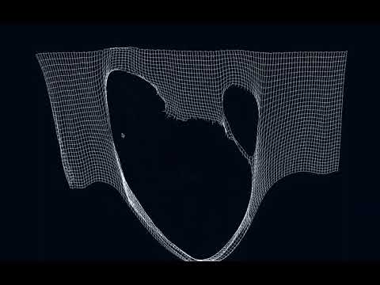
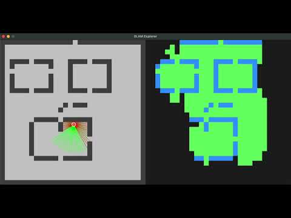
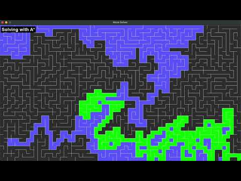

Watch demoC++ · PHYSICS · SIMULATION · 2022
A world with its own rules.
Rigid bodies, collisions, constraints, and interactive cloth. Simulation math implemented in C++.
Explore the engineSOFTWARE ENGINEER
Production systems.
Real-time graphics. Games people play.
I build systems, simulations, and games with algorithms at their core. At TechNarts, I modernize telecom platforms handling millions of records.
An interactive browser study. Explore my C renderer ↗
CURRENTLY Building telecom systems at TechNarts
BASED IN Ankara, Turkey
01 / IN PRODUCTION
Software Engineer · TechNarts
Sep 2025 – Present
STAR Suite, the telecom operations support platform used by Turkcell.
Moved from the existing STAR Suite team to a three-engineer modernization team in February 2026, contributing to the rebuild of a large legacy codebase with Django, PostgreSQL, Redis, Kafka, and React.
Migrated telecom datasets ranging from hundreds of thousands to millions of records from MariaDB to redesigned PostgreSQL schemas.
Reduced critical page response times from 20–30 seconds to 200–400 ms through query optimization, snapshot-based read models, and Redis caching.
Developing graph-based fiber routing and network impact analysis to trace how faults affect connected infrastructure.
02 / SELECTED WORK
Systems behind the scenes.
Experiments you can see.

Watch demoC++ · PHYSICS · SIMULATION · 2022
Rigid bodies, collisions, constraints, and interactive cloth. Simulation math implemented in C++.
Explore the engine
Watch demoPYTHON · MAPPING · ESTIMATION · 2025
A simulated robot builds a map from laser scans, using Kalman filtering to estimate its position as it moves.
See it in action
Watch demoPYTHON · BFS · A* · 2025
Maze generation and pathfinding visualized step by step, showing how BFS and A* explore routes to a destination.
See it in actionRouting, API keys, rate limiting, retries, and request metrics.
Concurrent workers, scheduled jobs, retry backoff, and a dead-letter queue.
Service boundaries explored through HTTP, RPC, gRPC, and messaging.
Custom transformations, clipping, lighting, and textured triangles, written in C.
A puzzle game connecting hand tracking in Python with interactive objects in Unity.
Peer-to-peer video with room coordination and real-time events.
BUILT. SHIPPED. PLAYED.
Four games published for Xbox and iOS, from first-person shooters to a hyper-casual chicken.
combined downloads
03 / TOOLKIT
Python · Go · C · C++ · C# · JavaScript · SQL · Swift · Rust
Django · Flask · Node.js · PostgreSQL · Redis · Kafka · RabbitMQ · Docker
Unity · SDL2 · OpenCV · PyGame · Rasterization · Physics · Pathfinding
REST · gRPC · WebRTC · WebSockets · MongoDB · GraphQL · GitHub Actions